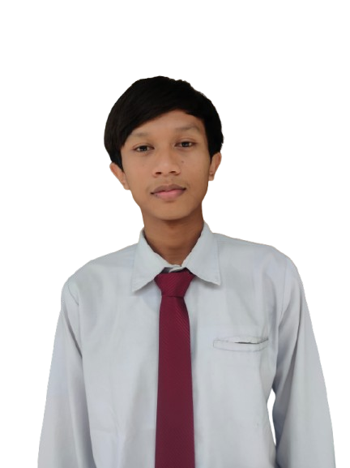

Halo! Saya Fadilah Ramadhana Mustofa, mahasiswa Universitas Muhammadiyah Jember yang berfokus pada pengembangan web, manajemen basis data, dan perancangan sistem modern.

Teknik Informatika · Universitas Muhammadiyah Jember
Saya adalah mahasiswa Teknik Informatika di Universitas Muhammadiyah Jember. Saya memiliki minat besar pada pengembangan aplikasi web, logika pemrograman, dan arsitektur basis data.
Bagi saya, pemrograman bukan hanya sekadar menulis sintaks, tetapi bagaimana menyusun logika yang efisien dan memecahkan masalah secara terstruktur. Saya aktif mengasah keahlian melalui tugas akademik, eksperimen mandiri, dan proyek praktis.
Fadilah Ramadhana Mustofa
2410658004
Teknik Informatika
Universitas Muhammadiyah Jember
Menyusun struktur web yang semantik dan tampilan responsif dengan Tailwind CSS.
Membuat interaksi antarmuka pengguna yang dinamis serta manipulasi DOM.
Mengolah logika server-side, integrasi form, dan pembuatan aplikasi web dinamis.
Merancang relasi antartabel, query SQL, serta manajemen basis data lokal.
Pembuatan diagram alur (Flowchart), Use Case Diagram, dan pemetaan ERD.
Penggunaan versi kontrol Git, GitHub, serta lingkungan pengembangan VS Code.
Aplikasi pengelolaan peminjaman buku, pendataan anggota, dan pencatatan transaksi berbasis PHP Native & MySQL dengan autentikasi multi-level user.
Pengembangan landing page portofolio personal yang mengutamakan kecepatan akses, tata letak clean, serta adaptif di layar smartphone maupun PC.
Perancangan skema ERD, Use Case, serta struktur tabel terdesentralisasi untuk sistem e-commerce berskala UMKM.
S1 Teknik Informatika · Fakultas Teknik
NIM: 2410658004
Jember, Jawa Timur
Saya selalu terbuka untuk diskusi proyek, belajar hal baru, atau pertukaran pengalaman seputar teknologi.